INTEGRATED DEMONSTRATION PLATFORM
水下半潜式机器人 · 自主巡航与多机协同综合演示平台
演示场景 SCENARIOS
算法体系 ARCHITECTURE
感知融合 — 制导决策 — 运动控制 — 图论一致性编队 · 全链路 Python 算法在线运行
本平台将项目各阶段成果整合为可切换的演示场景。网页端仅承担数字水池物理仿真、 传感器仿真与三维渲染；每一控制拍的感知融合、制导决策与运动控制均来自 蛟人核心算法包（Python）——与装机运行完全同一份代码，经 Pyodide 在浏览器内实时执行 （进入场景后自动加载并开始，首次约需十余秒）。
单艇 · 双通道规避判定感知 → 跟踪 → 威胁判定 → 按吃水分流：变深通道 / 水平通道

多艇 · 一致性编队全流程横队搜索 → 窄门收拢纵队 → 展开恢复 → 领航失效一致性接替

正在载入场景…
正在载入场景…
正在载入场景…
正在载入场景…